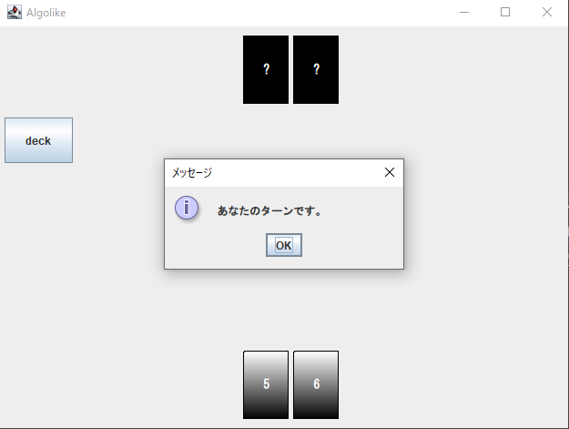
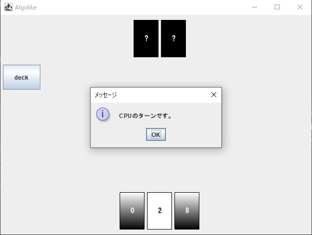
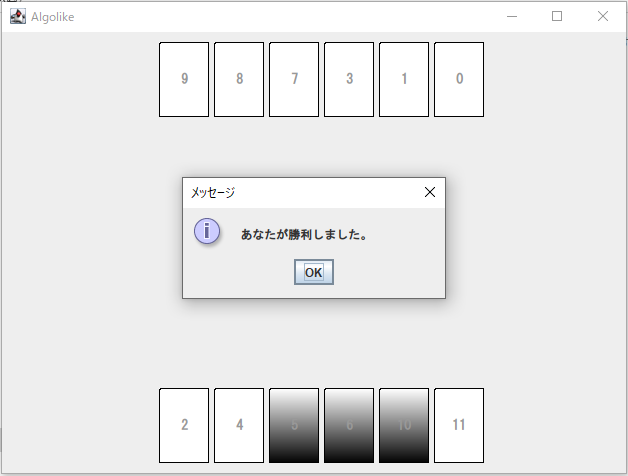
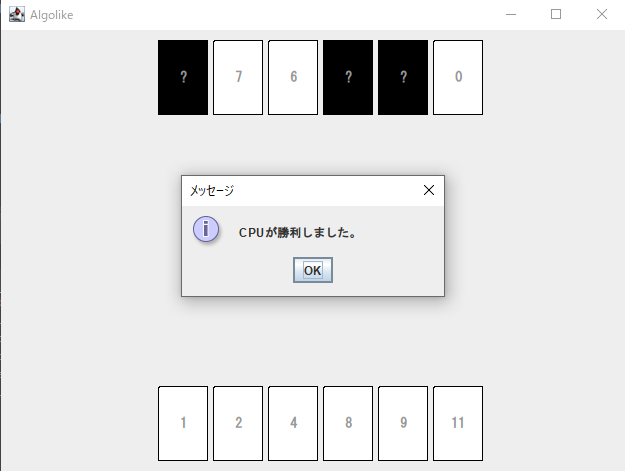

「Algolike」は，カードゲーム「algo」を基にしたゲームプログラムです．
Algolikeでは，「0」から「11」までの数字が書かれた計12枚のカードを用いて，プレイヤーとCPUが対戦します．
ゲーム開始時，12枚のカードを裏向けにして山札を作り，これを「デッキ」とします．
そして，各プレイヤーにデッキからカードを2枚配り．それを各プレイヤーの最初の「手札」とします．
なお，各プレイヤーは自分から見て左側から数字が小さい順になるように，相手にわからないよう手札のカードを裏向けにして並べなければなりません．
画面では，裏向きになっているカードは黒色で表示されます．(自分の手札は下側に表示されます)

ゲームはプレイヤーが交互に「アタック」という行動を繰り返して進行していきます．
アタックとは，相手の裏のカードを選んで，その数字を当てていくことをいいます．
以下では，行動しているプレイヤーを「自分」，自分からみた相手プレイヤーを「相手」とします．
この時，相手は選ばれたカードと宣言された数字が一致しているかどうかを「Yes」か「No」で答えます．
もし「No」だった場合，アタックは失敗となり，アタックに使用した自分のカードを表にして数字順になるように自分の手札に加えます．
画面では，表になったカードは白色で表示されます．
そして，ターンを相手に渡します．
これを交互に繰り返します。
プレイヤーの手札のカードが全て表になったとき、そのプレイヤーはゲームに敗北します。
 プレイヤーの手札のカードが全て表になったとき、そのプレイヤーはゲームに敗北します。
次へ